-
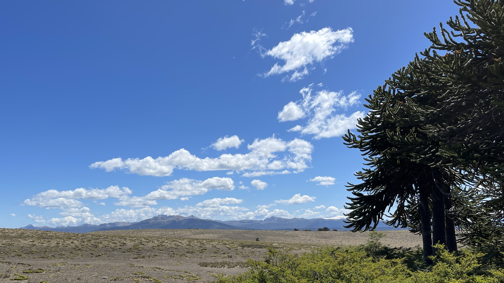
Puro, Chile, es tu cielo azulado, Pure, Oh Chile, is your heaven of blue, -
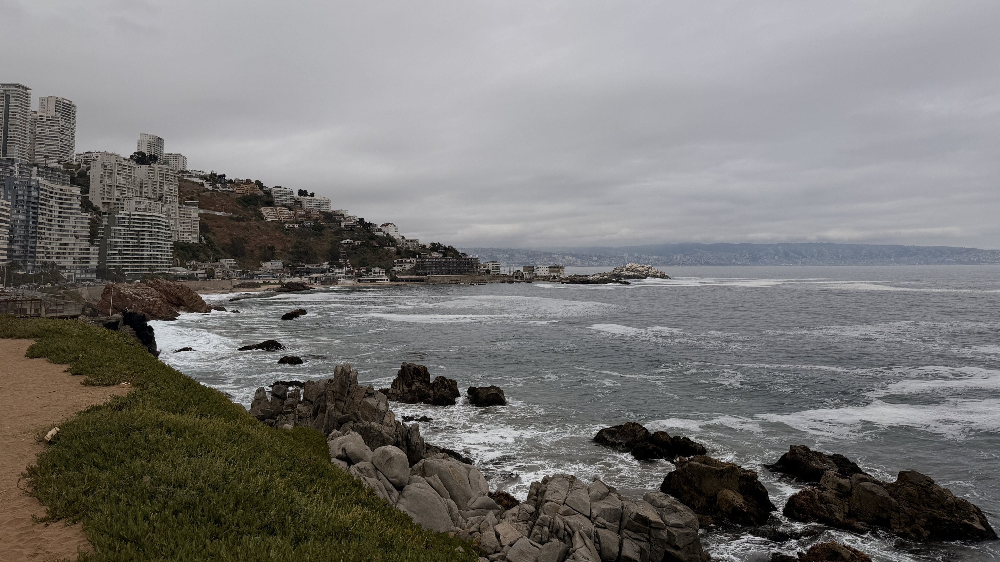
puras brisas te cruzan también, pure the breezes that over you glide, -
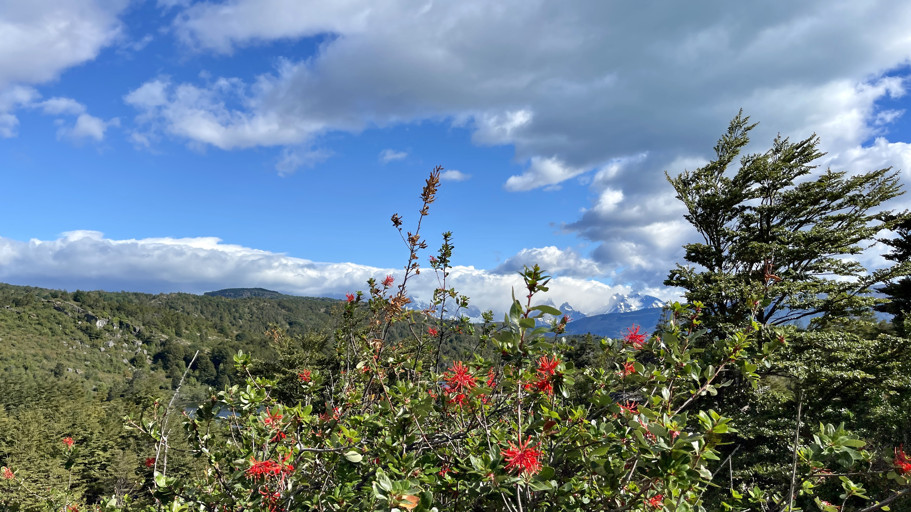
y tu campo de flores bordado and your fields, flower-embroidered in hue, -
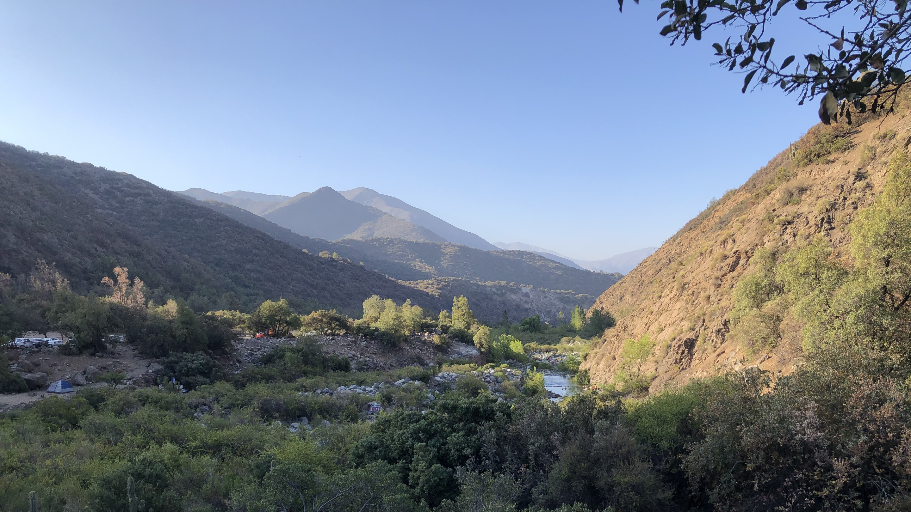
es la copia feliz del Edén. mirror Eden in beauty and pride. -
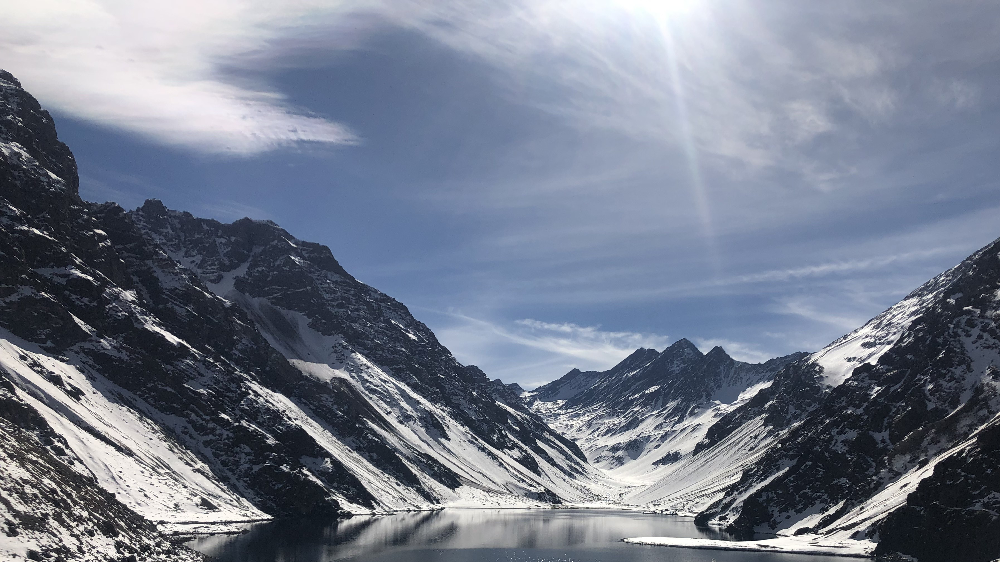
Majestuosa es la blanca montaña Majestic rise your mountains of snow, -
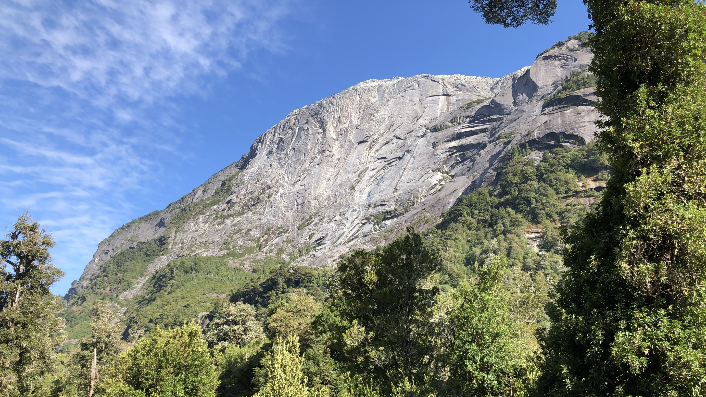
que te dio por baluarte el Señor, which the Lord gave as bulwark to thee, -
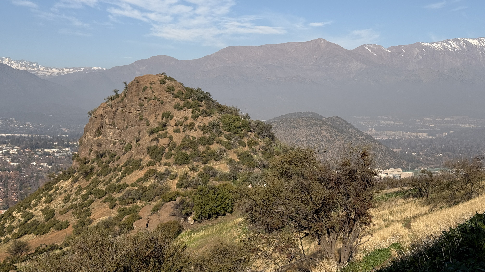
que te dio por baluarte el Señor. which the Lord gave as bulwark to thee. -
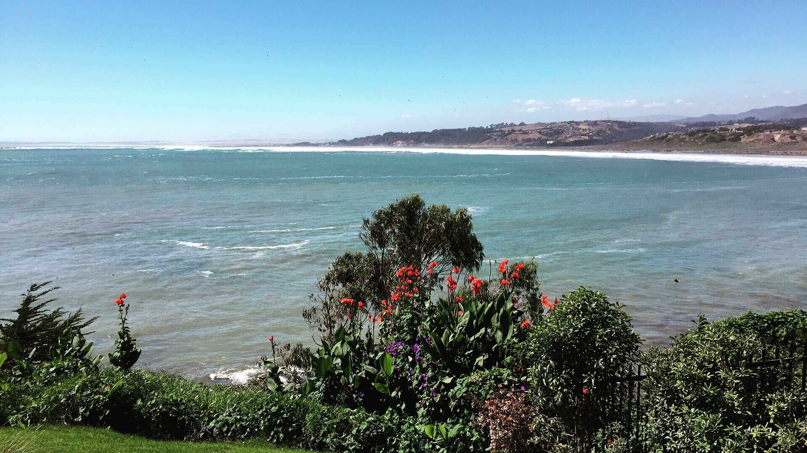
Y ese mar que tranquilo te baña And that sea, where the calm waters flow, -
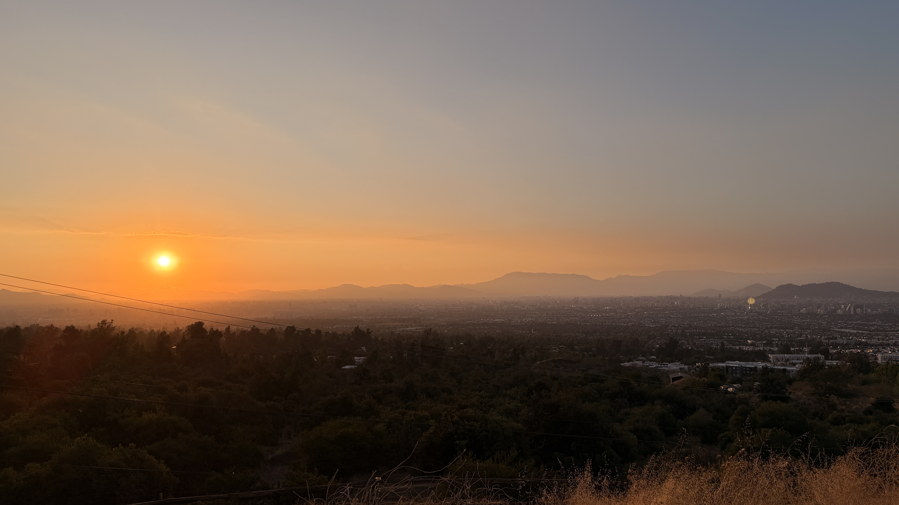
te promete el futuro esplendor. promises splendor yet destined to be. -
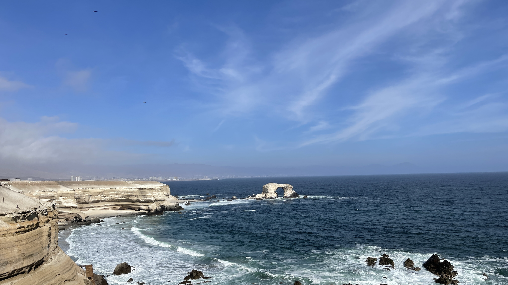
Y ese mar que tranquilo te baña And that sea, where the calm waters flow, -
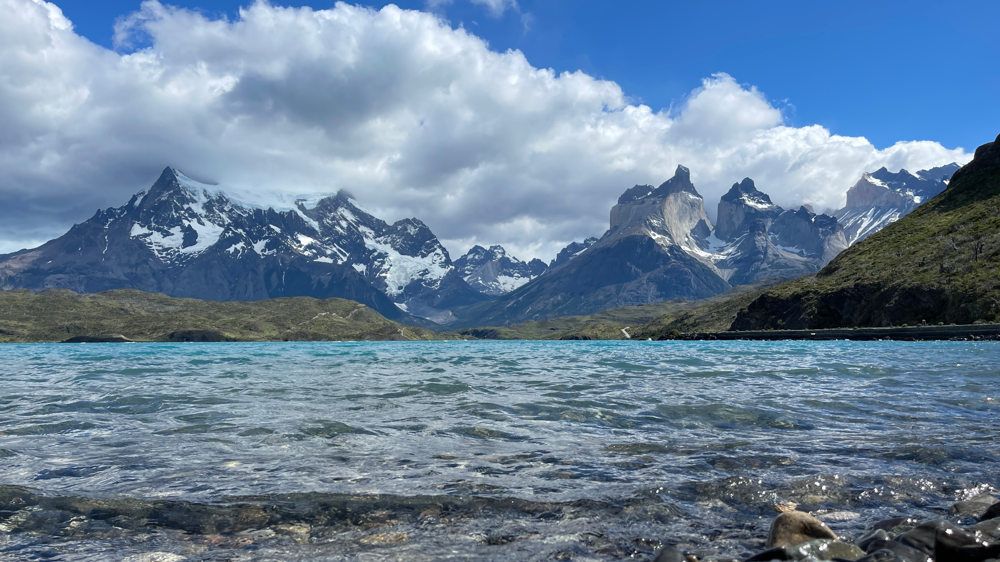
te promete el futuro esplendor. promises splendor yet destined to be. -
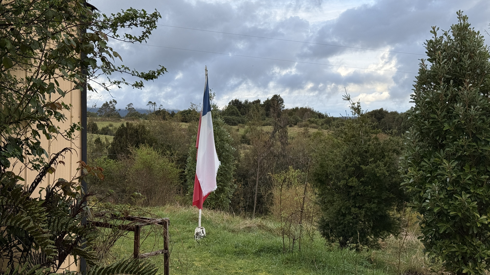
Dulce patria... Sweet Homeland...